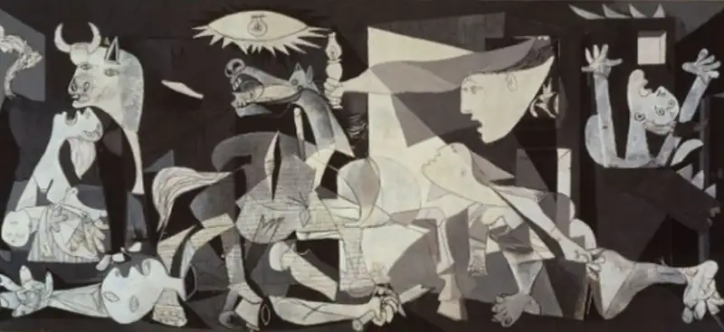
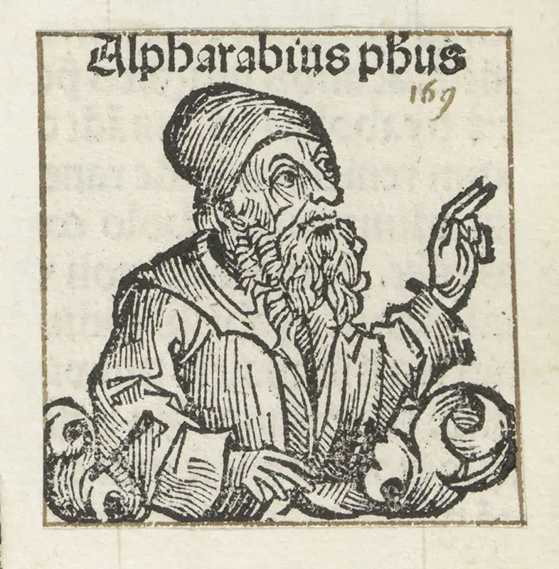
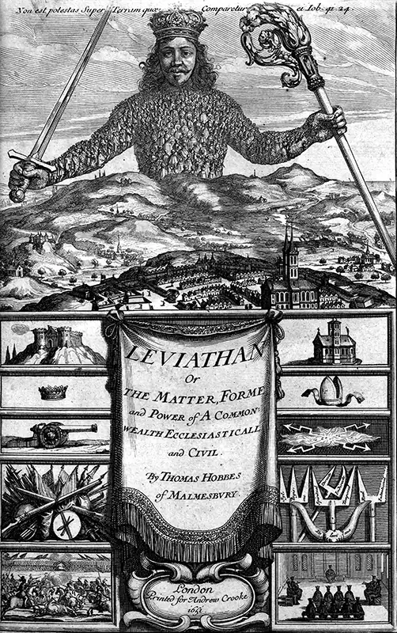
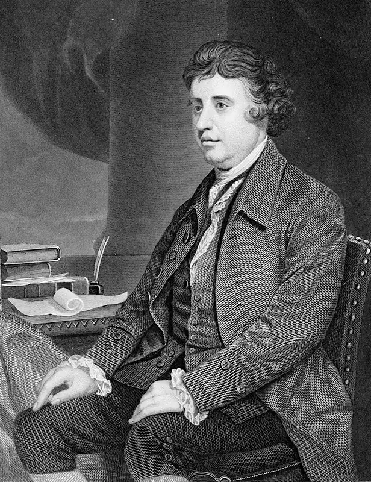
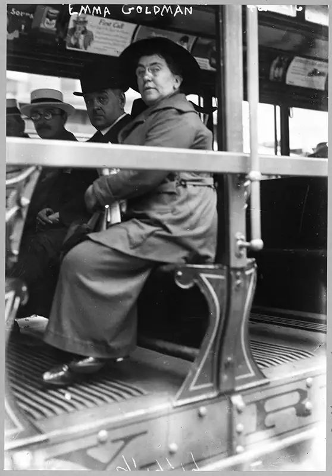

Chapter 11: Political Philosophy¶
Introduction¶

Politics invades much of our daily lives. Whether we are actively engaged in politics or not, it is difficult to interact on social media, watch television, or even have a casual conversation without political topics creeping in. Many of the things integral to our lives, such as getting an education, working, or even traveling, are dependent upon political systems. However, we rarely think about what grounds these systems. This chapter examines that grounding by introducing political philosophy. A branch of philosophy that looks at how society determines governance, political philosophy also considers core concepts such as justice, citizenship, and authority; investigates questions of legitimacy in political institutions; and examines the rights, freedoms, and responsibilities a citizen may hold in a society. This chapter begins by looking at a few key historical figures from different parts of the world and discovering how they pictured an ideal society. Next, it examines different types of rule and theories about how best to govern a society and address the roles leaders and citizens play. Finally, the chapter looks at some of the issues currently being discussed by political philosophers.
11.1 Historical Perspectives on Government¶
Learning Objectives
By the end of this section, you will be able to:
- Explain the connection between Aristotle’s theory of virtue and political philosophy.
- Compare views of a just society across cultures.
As political philosophies emerged in different cultures, their followers adopted notions of ideal societies and systems of government. This section examines the ideas of Aristotle and Plato in ancient Greece, Mozi in ancient China, and Al-Farabi in the early Islamic world.
The Just City in Ancient Greece¶
The history of political philosophy in the West can be traced back to ancient Greece. The term polis, from which is derived the word political, refers to the city-state, the basic unit of government in ancient Greece. Early inquiries were concerned with questions such as “Which qualities make for the best leader?” “Which is the best system of government for a city-state?” and “What is the role of a citizen?” For many philosophers, the most fundamental moral questions—such as “How should I treat others?” and “What constitutes a good life?”—are the basis for corollary political considerations. The philosopher Aristotle (384–322 BCE) links the two through the concept of telos, which means “goal directed.” All things in life have a goal, or an end purpose, he says. It is the goal of human beings to live a good life, which is only achievable by living a virtuous life. Acquiring virtue is a difficult task, requiring constant practice. The acquisition of virtue necessarily involves a community to provide education, model virtues, and provide opportunities for a person to behave virtuously. Therefore, living in a well-constructed political society is an essential part of living a good life. According to Aristotle, “This truth is attested by the experience of states: lawgivers make the citizens good by training them in habits of right action—this is the aim of all legislation, and if it fails to do this it is a failure; this is what distinguishes a good form of constitution from a bad one” (1996, 1103b20).
Plato and The Republic¶
Plato’s Republic is perhaps one of the best-known early texts examining the concept of a just society and the role of the citizen. Plato (ca. 428–348 BCE) uses a method of guided argumentation, known today as the Socratic method, to investigate the nature of justice. Using his mentor, Socrates, as the main interlocutor, Plato opens The Republic by asking what it means to live a just life, and the text evolves into a discussion about the nature of justice. Socrates asks, Is justice simply an instrument used by those in power, or is it something valuable in itself?
Socrates believes that behaving justly provides the greatest avenue to happiness, and he sets out to prove this idea by using the analogy of the just city. If a just city is more successful than an unjust one, he argues, it follows that a just man will be more successful than an unjust man. Much of Plato’s Republic imagines this just city. First, society is organized according to mutual need and differences in aptitude so that all the people can receive essential goods and services. For example, some people will be farmers, while others will be weavers. Gradually, the city begins to develop trade and introduce wages, which provide a basis of a good society. But commerce with outsiders opens the city to threats, so soldiers are needed to protect and defend the city. Soldiers of a just society must be exceptional in all virtues, including skill and courage, and must seek nothing for themselves while working only for the good of the society. Plato calls these soldiers guardians, and the development of the guardians is the main focus of the text because the guardians are the leaders of the society.
The Role of the Guardians¶
The guardians’ training begins when they are quite young, as they must be exposed only to things that will develop a strong character, inspire patriotic feelings, and emphasize the importance of courage and honor. The guardians must not be exposed to any narrative that dwells on misery, bad luck, illness, or grief or that portrays death or the afterlife as something to fear. Furthermore, they must live communally, and although allowed to marry, they hold children and property in common. Because the guardians begin their education at such an early age, they are taught to view their lifestyle not as a sacrifice but as the privilege of their station. The guardians who are considered to be the most virtuous, both morally and intellectually, eventually become the city’s rulers, known as philosopher-kings: “Until philosophers are kings, or the kings and princes of this world have the spirit and power of philosophy, and political greatness and wisdom meet in one . . . cities will never have rest from their evils” (1892, 473d–e).
Plato establishes the four virtues upon which the state should be founded: wisdom, courage, discipline, and justice. While wisdom and courage must be present in the guardians, all members of the city must be at least partially disciplined, performing their jobs and roles to maintain the peace and harmony of the state. Even for those who are allowed private property, accumulating wealth is discouraged because it encourages laziness and selfishness, traits that endanger the peace of the city. The theme of communal property appears several times in The Republic. Socrates claims that when things are shared in common (including women and children), sufferings and joys are also shared (461e). Thus, when one person loses something, the whole community loses, but when one gains something, the whole community gains. Second, when words such as mine are eliminated, conflicts over property are also eliminated, along with a sense of lack or suffering when someone else prospers. Communal sharing helps eliminate rebellion, strikes, and other forms of discontent and promotes social harmony, which is essential for a good society.
Plato’s notion of three tiers of society—guardians, auxiliaries, and laborers—corresponds with elements of the soul. Just as these three groups work together for the good of the city, reason and knowledge work together with discipline to overrule passions that threaten to disrupt the harmony of individuals. These three qualities allow individuals to be just and virtuous.
The Tradition of Exclusion¶
When thinking about foundational texts, we must pause to consider the missing voices of those denied a role in governance, which ironically represents a significant injustice embedded in early theories of justice. In ancient Greek texts, as in many texts that make up the foundational base of political philosophy, the citizenry generally consists of wealthy men. Women are excluded from consideration, as are those born into slavery (rights are occasionally extended to enslaved individuals obtained through war). According to Aristotle, women are by nature born into a lower hierarchy than men and are not reasonable enough to engage in political life. Aristotle also deems the elderly to be no longer competent to engage politically, while children (presumably male children) are not yet old enough to be competent: “The slave is wholly lacking the deliberative element; the female has it but it lacks authority; the child has it but it is incomplete” (1984, 1260a11). Aristotle’s requirements for citizenship are a bit murky. In his view, an unconditional citizen is one who can participate in government, holding either deliberative or judicial office. Nonetheless, Plato’s Republic does imagine a role for women as members of the ruling guardian class: “Men and women alike possess the qualities which make a guardian; they differ only in their comparative strength or weakness” (1892, 456a).
Mohism in China¶
Roughly 8,000 miles east of the birthplace of The Republic, a group of thinkers called Mohists were engaged in similar conversations about justice and governance. Mohism arose during China’s Warring States era (481–221 BCE), a period of great social upheaval. Though this conflict was eventually resolved by the unification of the central states and the establishment of the Qin dynasty, the constant shifting of political boundaries led to a massive exchange of cultural, economic, and intellectual information. For this reason, this era is also known as the “‘hundred schools’ of thought” period (Fraser 2020, xi). The chapter on normative moral theory discusses the central tenets of Mohist thought; this section will examine its political ideals.
The Book of Mozi¶
The central tenets of Mohism can be found in the Mozi, an important text in Chinese philosophy. Compiled by followers of the teacher and reformer Mo Di, or Mozi (470–391 BCE), the Mozi explores a range of topics, including logic, economics, science, and political and ethical theory. Like Plato’s Republic, the Mozi explores what constitutes virtuous behavior and arrives at ideas of universal love and benevolence. Mohists evaluate behavior according to how well it benefits others. Governance should focus on how best to promote social welfare. The morality of an action or policy is determined by its outcome. According to the Mozi, aggression and injury to others, even in military operations, should be opposed.
Connections
The chapter on normative moral theory covers consequentialism in greater detail.
The Mohist Ruler in China¶
The Mohists believed that individuals are essentially good and want to do what is morally right, but they often lack an understanding of moral norms. Therefore, a virtuous and benevolent ruler is necessary to provide a standard of moral education and behavior. The Mozi describes social disorder in antiquity:
In the beginning of human life, when there was yet no law and government, the custom was “everybody according to his own idea.” Accordingly each man had his own idea, two men had two different ideas and ten men had ten different ideas—the more people the more different notions. And everybody approved of his own view and disapproved the views of others, and so arose mutual disapproval among men. (Mozi n.d., I.1)
To combat this disorder and establish a form of peaceful cooperation, it became necessary to identify a ruler. Thus, “Heaven” chose a sage ruler, “crown[ing] him emperor” and “charging him with the duty of unifying the wills in the empire” (Mozi n.d., II.2).
The sage ruler in turn chose three wise ministers to help him. However, they realized “the difficulty of unifying all the peoples in mountains and woods and those far distant,” so they further divided the empire and appointed feudal lords as local rulers, who in turn chose “ministers and secretaries and all the way down to the heads of districts and villages, sharing with them the duty of unifying the standards in the state” (Mozi n.d., II.2). Once this governmental hierarchy was established, the ruler issued an edict to the people to report moral misconduct among both the citizenry and the leaders. In this way, the Mozi says, people would behave judiciously and act in good character.
In the Warring States period, Mohism competed with Confucianism. With the rise of the Qin and Imperial dynasties that followed, it declined, although many of its tenets were absorbed into Confucianism, whose influence in China lasted over 2,000 years.
Al-Farabi’s View of Rulership¶
The emphasis on virtuous behavior as a condition for a civic peace can also be seen in the work of Islamic philosopher Al-Farabi (870–950 CE). While there is not much information regarding Al-Farabi’s life, it is known that he came to Baghdad during the golden age of Islam, likely from central Asia. Alongside Arab geographers and historians and Christian scholars translating texts from Greek to Arabic, Al-Farabi wrote and taught. Baghdad was home not only to the largest urban population at the time but also to great libraries and educational centers that produced advances in math, optics, astronomy, and biology. Al-Farabi fled Baghdad due to political turmoil later in his life and is believed to have died in Damascus. He remains an important thinker who influenced later, and perhaps better known, philosophers such as Avicenna and Averroes. Early biographers emphasize his contributions to the fields of logic and metaphysics, which are still recognized as pivotal today. Al-Farabi was one of the first Islamic philosophers to study Greek political philosophy and write about it (Fakhry 2002). He advances some of the Greeks’ ideas in his discussion of the supreme ruler and the city of excellence (Galston 1990). For this reason, he is often called the “second master,” with Aristotle being the first.

The Supreme Ruler¶
Al-Farabi’s supreme ruler is the founder of the city—not a historical founder, but rather one who possesses both practical and theoretical knowledge and is not bound by any precedent or prior authority. While a supreme ruler bases their decisions on careful analysis, their “successor” accepts and builds upon the judgments of the supreme ruler without subjecting those judgments to philosophical scrutiny (Galston 1990, 97).
The supreme ruler has knowledge of both political philosophy and political science. For Al-Farabi, political science is the practical understanding of statecraft, which includes managing political affairs. It is the job of political science to investigate the ways in which people live their lives, including their moral dispositions and inclinations, and to look at the motivations behind actions and determine whether their aim is “true happiness.” True happiness comes about through virtuous actions and the development of moral character. By contrast, presumed happiness focuses on things that corrupt, such as power, money, and material pleasures. Political philosophy is the theoretical knowledge needed to identify virtuous behavior.
Philosophical and Nonphilosophical Rulers¶
Al-Farabi draws a distinction between philosophical and nonphilosophical rulers. Nonphilosophical rulers may possess practical knowledge and be able to make judgments based on their experience observing and interacting with individuals in the city. They will be able to recognize patterns and similarities in conflict and thus make the fairest decisions possible to ensure the peace, even as they rely on the wisdom of the supreme ruler. On the other hand, philosophical rulers possess theoretical as well as practical knowledge and will be able to determine the wisdom of actions themselves (Galston 1990, 98). A philosophical ruler can become a supreme ruler, while a nonphilosophical ruler cannot.
Cities of Excellence¶
Like Plato’s Republic, Al-Farabi’s city must be ruled by a philosopher and seek to educate a class of philosopher-elites who can assist in the city’s management. The classes to which the citizens of the city belong are determined by the supreme ruler and are based on their natural attributes, actions, and behaviors (Galston 1990, 128). The overarching goal is to create a virtuous city or nation that gives its citizens the greatest chance of attaining true happiness.
This is in stark contrast to the immoral city, in which people embrace vices such as drunkenness and gluttony and prioritize money and status over virtuous actions. Citizens act in this way not out of ignorance but rather by choice. Such a people can never attain true happiness because their happiness is based on temporary things (Galston 1990). If a city is not ruled by a supreme ruler, however, it is not necessarily destined to become an immoral city, and its citizens may still be able to achieve true happiness through the pursuit of virtue. In the Political Regime, Al-Farabi states:
Among the necessary cities, there may be some that bring together all of the arts that procure what is necessary. Their ruler is the one who has fine governance and excellent stratagems for using [the citizens] so that they gain the necessary things and fine governance in preserving these things for them or who bestows these things on them from what he has. (quoted in Germann 2021)
Nonetheless, such a city can never be considered a city of excellence; its aim is to provide for the material well-being of its citizens, but it lacks philosophical understanding of well-being in a larger sense.
The city of excellence is governed by the practice of the “royal craft,” or the management of political affairs. The royal craft attempts to establish a social order based on positive character, virtuous behavior, and moral action. When the citizens of the city embody these principles and encourage others to embody them as well, a harmonious society results, one in which all inhabitants can achieve their greatest possible level of happiness and fulfillment
Think Like a Philosopher
Plato and Al-Farabi both thought that a just city should be ruled by a philosopher. What factors determine whether a government will make good decisions? Do you agree with Plato and Al-Farabi that these factors are the virtue and abilities of its leader or leadership? What role does the structure of the government play in how it makes decisions and how good those decisions are? Identify two or three good decisions your government has made. Using the SIFT or four moves approach from the chapter on critical thinking, research each decision. Then write a paragraph about each decision, describing how the decision was made. Explain why it does or does not support Plato’s and Al-Farabi’s position.
11.2 Forms of Government¶
Learning Objectives
By the end of this section, you will be able to:
- Explain the difference between absolute and constitutional monarchies.
- Distinguish between representative and totalitarian forms of government.
- Relate social classes and caste systems to political systems.
Political schools of thought from ancient Greece, China, and the Islamic world have influenced governments for centuries. The ideological beliefs of individuals holding power within a government play a large role in the way that government operates. In addition, these ideas may inspire people to reform the structure of their political system. This section looks at some of the most common forms of government and examines their social and ideological roots.
Monarchy¶
Monarchy is a system of rule in which authority resides in one individual, who is head of state. Generally, monarchical rule is passed down through a line of succession. Monarchies have existed at least since 3000 BCE and have been a common form of government around the globe. Some examples are the Germanic Franks and Visigoths of the third and fourth centuries, the kingdoms of Spain and France, and the African countries of Morocco and Eswatini, which are still in existence today (Kostiner 2020).
Absolute Monarchies¶
A monarchy can be either absolute or constitutional. In an absolute monarchy, the ruler retains complete control and is not beholden to any other state authority. In the Zoroastrian tradition, following the idea of the divine right of kings, rulers were chosen by the gods and bestowed with khvarenah, or royal glory, which gave them wisdom, marked them as “supreme among the people, and indicated that they had been divinely endowed with kingship” (Choksky n.d.).
Constitutional Monarchies¶
A constitutional monarch, on the other hand, works within the framework of a constitution and with other political figures of the state. In a constitutional monarchy, the monarch acts as head of state and has some executive powers but does not personally make policy. The British monarchy is an example of a constitutional monarchy, although prior to the mid-1600s, it was an absolute monarchy. As a result of agricultural and industrial revolutions and religious conflict, a middle class arose in England that demanded political power through Parliament. Today, the United Kingdom is ceremonially headed by the royal family, but the right to create policy and develop legislation belongs to the democratically elected Parliament, which acts under the leadership of a prime minister. For this reason, the British system is also considered a parliamentary democracy. While the power they exercise is limited, the royal family is still considered by many in the UK to represent tradition and serve as the physical embodiment of the nation (Royal Household at Buckingham Palace 2021).
Watch the video for a discussion on the types of monarchies still governing today.
Video: Types of Monarchies
Aristocracies and Caste Systems¶
Ruling authority in an aristocracy is in the hands of a small number of individuals considered to be elite members of society. Similar to monarchy, an aristocracy is determined through lines of succession. Generally, the higher a person’s class, the closer they get to the actual seat of power.
Greek Class Systems¶
In a class system, members of society are placed in different groups based on their perceived worth and benefit. From these social hierarchies arise a system of political obligations from which rulers and their governments derive power and authority.
A classic example of a class system is found in The Republic, when Plato divides society into five classes of citizens: agricultural or industrial producers, sailors and shipowners, merchants (i.e., importers and exporters), retail traders, and manual laborers. In Plato’s view, individuals should keep to the jobs they know best. Moreover, because people are not equal in aptitude, “we must infer that all things are produced more plentifully and easily and of a better quality when one man does one thing which is natural to him and does it at the right time, and leaves other things” (Plato 1892, Book 2).
Indian Caste Systems¶
A current example of a class-based system is the Hindu caste system in India, called jati, which assigns people their role in society according to the social class into which they are born. There is a great deal of debate about the origin of the caste system, but the Rig Veda, the oldest texts in Hinduism’s most sacred scriptures, offer a mythical origin of jati. In one poem in the Rig Veda, primordial man, called Purusha, sacrifices himself to create humanity, and from Purusha’s body the castes are created. The four original castes (varnas, or social classes) are the Brahmins (priests and scholars), the Rajanya or Kshatriya (rulers and warriors), the Vaishya (workers, farmers, and craftsmen), and the Sudra (servants and laborers) (Johnson and Johnson 2008). In addition, outcastes or “untouchables” make up a fifth group, now called Dalits (Mayell 2003). The Hindu caste system is intimately bound with religious beliefs about karma and reincarnation. Hindus, who make up the majority of people in India, believe that the fruits of a person’s good and bad deeds (karma) are carried from one life to the next when the soul reincarnates. Therefore, a person’s place in the social hierarchy is determined by fate or karma, based on their behavior from life to life.
In the 20th century, with the establishment of self-rule, the modernization of its economy, and the establishment of a democratic system, India reformed its social system. Today, caste discrimination is no longer legal, although it is still rampant in India. From four primary castes, the caste system grew to encompass some 3,000 subcastes over time, along with further subdivisions of the subcastes. Proponents of the caste system, including some within Hindu nationalist parties, argue that caste is a way of organizing society. Lone individuals lack power, they argue, but if individuals see themselves as part of a larger group, they may function as a de facto union. These defenders of the status quo argue that it is extraordinarily rare for wealthy, politically powerful families to give up their power, just as it is extremely rare for impoverished people to increase their political power.
Representative Government¶
In representative government systems, individuals are chosen by various means to represent the larger group. Representative government likely has deeper roots than monarchies or aristocracies. Cheyenne, Iroquois, Huron, and other Native American peoples established tribal democracies prior to European settlement of the Americas, and San (Bushmen), Pygmies, and other African peoples practice “campfire democracy” (Glassman 2017). These examples and others suggest that cooperation between bands of peoples may have featured elements of representative government prior to urban settlements.
The story of democracy in urban settings is often linked to ancient Greece, specifically Athens, where the hand of government was extended to the people, but only to individuals in particular classes. The Athenian mode of government was unique in the region. Before 700 BCE, Athens was ruled by single individuals or small groups who often encountered social and economic problems that brought about instability. Around the year 600 BCE, the Athenian ruler Solon (c. 630–c. 560 BCE) implemented a proto-democratic system. He did not allow nonaristocratic individuals to hold certain offices, but he did allow all male citizens (which is not to say all inhabitants) to vote on local leaders, and he did his best to outlaw debt slavery. His successes were short-lived, but he paved the way for an impressive span of democratic rule in Athens.
In Thucydides’s (c. 460–c. 404 BCE) History of the Peloponnesian War, Pericles (c. 495–429 BCE) praises the Athenian constitution, in particular the idea that all members of a state should be allowed to participate in its governance. The Athenian constitution “favors the many instead of the few,” he says, and the laws “afford equal justice to all in their private differences” (Thucydides [1996] 2008, 112).
Pericles links the notion of freedom to success both in governance and in people’s daily lives. On both fronts, he holds that happiness is “the fruit of freedom” (Thucydides [1996] 2008, 115). His view is that, despite the imperfections in its implementation of democracy, Athens has the best form of government in existence. Athenians are happy in a way that members of other polities are not, says Pericles, so much so that Athens is worth defending in battle.
Current forms of democracy center on the notion of rule by the people, but today’s democracies are not administered by direct rule, with all policy decisions voted on by a majority. For example, the United States has a representative democracy, which means that individuals are elected to make legislative decisions on behalf of the people.
American philosopher Richard Arneson (b. 1945) holds that “what renders the democratic form of government . . . morally legitimate . . . is that its operation over time produces better consequences for people than any feasible alternative mode of governance” (2009, 197). This statement is an instrumental defense of democracy, arguing that democracy is a good in itself and that democracies must prove themselves over time. Many argue that democracies seem to outperform extant rival systems. Indian philosopher and Nobel Prize winner Amartya Sen (b. 1933) has argued that democratic nations are the wealthiest in the world, and because positions of power are determined through elections, their leaders are more likely to try to meet the needs of the population.
According to Sen, “No substantial famine has ever occurred in any independent country with a democratic form of government and a relatively free press” (quoted in Christiano and Bajaj 2021). What is more, democracies are less likely to go to war with one another than are nondemocratic states. Sen also points out that democratic governments allow people with different moral and political views to coexist. He observes that democracy has allowed multiple religions to exist relatively peacefully in India. Nonetheless, democracy is not a flawless system; some of the problems found in the system are discussed in Section 11.4 below.
Totalitarian Forms of Government¶
Totalitarianism¶
Totalitarianism is a system of government that exercises complete control over its population in both personal and public life by eliminating free press and imposing censorship and mass surveillance, along with other social controls. In a totalitarian system, opposition to the state is prohibited, and repercussions for disobedience are generally severe. Totalitarianism can also take the form of autocracy, in which power is concentrated in the hands of an individual, through a dictatorship under a single leader. For example, in the 20th century, the Soviet Union under Joseph Stalin (1878–1953) and the Italian Fascist regime under Benito Mussolini (1883–1945) were totalitarian regimes. A totalitarian system is different from tyranny, fascism, or communism, although there are enough similarities among these terms that the terms are often incorrectly used interchangeably.
Communism¶
Communism, an ideology that has engendered totalitarian governments, is largely associated with the Soviet Union (1922–1991) and the People’s Republic of China (1949–present). While traces of communist ideas can be found much earlier in history, modern communism springs from the work of Karl Marx and Friedrich Engels, who called for a “dictatorship of the proletariat” to seize the means of production from private control and establish instead a system of labor and goods distribution that would benefit the working class.
In modern communist countries, the state owns the means of production, sets wages, regulates production, and controls prices. Although these countries may hold elections, the leadership of the ruling political party monopolizes political power, dictating policies that cross over from public life into private life and severely restrict individual freedom. Between 1932 and 1933, for example, the leader of the Soviet Union, Joseph Stalin, implemented an agrarian collectivization program in Ukraine. Stalin ordered that any family that owned 24 acres or more of land lose all their possessions and be deported to work camps in Siberia. Somewhere between four and seven million people starved to death.
Fascism¶
Fascism is another ideology that produced totalitarian political systems. As an ideology, fascism is characterized by a strong sense of nationalism, a disdain for democratic principles, and a belief in social hierarchy (Soucy 2021). Fascism was largely popular during the time known as the interwar years, meaning the years between the two world wars (roughly 1920–1938), although the fascism of Italy and Germany continued through World War II (1939–1945) and fascism under Francisco Franco in Spain, which began in 1936, continued until 1975. In Italy, Benito Mussolini rose to power and established a fascist dictatorship beginning in 1925. The devastation caused by World War I (1914–1918), after which Europe struggled to rebuild and cope with food shortages and unemployment, created conditions that were ripe for the emergence of charismatic strongmen who promised to bring prosperity back to their nations.
It was during this same period that German citizens, suffering under heavy sanctions from the Allied powers at the close of World War I, embraced the leadership of Adolf Hitler, who was elected as Germany’s chancellor in 1933. Hitler quickly moved to consolidate power and establish himself as absolute dictator in what had formerly been a democratic country. Hitler’s National Socialism was a fascist ideology, with the added component of a genocidal program carried out against Jews and the Romani as well as other groups (Wiener Holocaust Library n.d.).
Hannah Arendt on Totalitarianism¶
In the seminal book The Origins of Totalitarianism (1951), philosopher and political theorist Hannah Arendt (1906–1975) argues that totalitarianism is a relatively new form of government that seeks to exert control over every aspect of not just social and political life but citizens’ personal lives as well. She says that a key difference between dictatorships, including those operating under fascism, and totalitarian regimes is that while the former assumes power and seeks to install members of its party in all offices of government, the latter includes a proliferation of the party into all arenas, including the state, the police, elite groups, and so forth. Furthermore, under a totalitarian system, laws are fungible, meaning they can change day by day. The ultimate goal of such regimes, Arendt says, is the eradication of any notion of the self as an individual in favor of the creation of the self as an extension of the government (Arendt 1951). The power of totalitarianism lies in the use of systematic violence to create a sense of total terror at the thought of countering the government and the dismantling of one’s capacity for independent thought until people are wholly dependent on the government. The survival of the regime depends on eliminating any factor of identity for individuals beyond that of “citizen”—although people under totalitarian rule are more captives than citizens.
Table 11.1 summarizes these various forms of government.
Table 11.1 Forms of Government
| Form of Government | Description | Examples |
|---|---|---|
| Monarchy | Authority resides in one individual, who is the head of state | Numerous, including past kingdoms, such as Spain and France, and modern kingdoms, such as Morocco |
| Aristocracy | Authority is in the hands of a small number of individuals considered to be elite | Greek class system, Indian caste system |
| Representative Government | Individuals are chosen to represent the larger group | Tribal democracies of Native American peoples; the majority of contemporary governments in North America, South America, and Europe |
| Totalitarianism | Government limits individual freedom through controls over the press, mass surveillance, and other social controls | Soviet Union under Stalin, Italian regime under Mussolini |
| Communism | The state owns the means of production, sets wages, regulates production, and controls prices | People’s Republic of China |
| Fascism | Totalitarian political system characterized by a strong sense of nationalism, a disdain for democratic principles, and a belief in social hierarchy | Germany under Hitler, Spain under Franco |
Write Like a Philosopher
View Hannah Arendt’s revisions to the introduction of the third edition of The Origins of Totalitarianism at the Library of Congress. Read through the hand-edited, typewritten manuscript. Then, answer these questions.
- Arendt’s passion inspires every word she writes. She is obviously not impartial. What is Arendt’s attitude toward her topic?
- What are the main points Arendt raises in her introduction?
- Consider what you learned about critical thinking and logic in the chapter on critical thinking. Is Arendt’s passion an asset or a barrier to her ability to reason and write philosophy? Explain your reasoning.
- What edits to the third edition does Arendt make? What is the purpose of those edits?
- What can you learn from this manuscript about writing philosophy?
11.3 Political Legitimacy and Duty¶
Learning Objectives
By the end of this section, you will be able to:
- Identify two key arguments for political legitimacy.
- Explain how a person might have a duty to others without having an obligation to the state.
No matter what system of government a society adopts, a government needs authority to rule. What gives rulers their authority, and what rights, if any, do citizens have? One fundamental question of political theory becomes, What are the sources of the legitimacy of a political system, and by extension, how much authority do rulers or leaders have over citizens? Further, what obligations does a state owe its citizens, and vice versa? This section will explore different ideas and characteristics of the source of authority and the obligations of its members.
Divine Rule¶
The Mohists claimed that the emperor is chosen by heaven rather than the people. In order to fight against social chaos, heaven identifies a wise ruler to establish control and act as a model of virtuous behavior (Mozi n.d.). This is an example of divine rule, which legitimizes the rule of monarchs and lines of succession in a royal family by stating that monarchs are chosen by divine authority and therefore are not answerable to the people. The idea of divine rule became prevalent in Europe after the Roman Empire adopted Christianity. Yet with the rise of Protestantism and the middle classes in Europe, new ideas emerged about authority and the rights and responsibilities of leaders and citizens. Philosophers in western Europe, such as Thomas Hobbes and John Locke, began to argue that the legitimacy of government rests on a social contract between the ruler and the ruled.
Thomas Hobbes and Absolute Monarchy¶

Leviathan, written by the English philosopher Thomas Hobbes (1588–1679) and first published in 1651, looks at the structure of systems of government and develops the social contract theory. In the text, Hobbes imagines a time prior to the creation of social institutions, when humans were motivated solely by satisfying their desires. When land and food are plentiful, people can meet their needs and even store surplus for lean times. But as population increases, people compete for resources, which means that one person’s gain is another’s loss. Scarcity leads to conflict when people fight to obtain what they need. Prior to the establishment of political authority, there is no check on violence, and thus human beings enter a state of perpetual war, which Hobbes considers the state of nature. In this state,
there is no place for Industry; because the fruit thereof is uncertain; and consequently no Culture of the Earth; no Navigation, nor use of the commodities that may be imported by Sea; no commodious Building; no Instruments of moving, and removing such things as require much force; no Knowledge of the face of the Earth; no account of Time; no Arts; no Letters; no Society; and which is worst of all, continuall feare, and danger of violent death; And the life of man, solitary, poore, nasty, brutish, and short. (Hobbes [1968] 2002, ch. 13)
To successfully leave the state of nature, people must form a political community that ensures their basic needs are met, moderates conflicts, and codifies rules of behavior. Part of that project includes identifying a power that can hold authority. Hobbes believed that power should be held by the monarchy, arguing that one absolute and central authority is the best method of maintaining peace and avoiding discord and factionalism.
John Locke and Representative Government¶
Other proponents of the social contract, including French philosopher Jean-Jacques Rousseau (1712–1778) and English philosopher John Locke (1632–1704), rejected absolute monarchy. Instead, they argued for representative government. In fact, John Locke’s Second Treatise on Civil Government (1689) served as a major inspiration for the American founding fathers. Some of his well-known ideas can be found in the Declaration of Independence and the Constitution. Locke defends the necessity of the separation of the church and state, for example, and provides the origin of the edict on self-preservation that leads to retaining the right to bear arms.
Similar to Hobbes, Locke imagines that people begin in the state of nature and eventually agree to give up some liberties to an impartial authority in exchange for peace and security. But unlike Hobbes, Locke says that we exist peacefully for the most part and can be counted on to act in our interests when necessary. Locke invokes natural law, which is the notion that humankind is granted rationality by God and can use that rationality to determine moral laws. These laws are obligatory and include respect for others and the recognition of individual liberty. As Locke sees it, humans are born into “a state also of equality, wherein all the power and jurisdiction is reciprocal” (Locke 2016, 122). We are naturally free and equal; no one person has more natural power or right to rule than another. Locke maintains “that all men are naturally in that state, and remain so, till by their own consents they make themselves members of some politic society” (129).
In Locke’s state of nature, we have the right to own ourselves and can do what we like with ourselves, and we can own limited property. At first, property is things from nature that God gave to us in common to fulfill our basic needs and survival. Later, as society develops and begins using money, property is extended to include what we improve through our labor. Even in this early state, we are not free to abuse others. We are not free to take more than we need, for example. The law of self-preservation is prominent throughout Locke’s treatise and can be found in his discussion of war as well in his solution to a tyrannical government (that people exercise their right to change it). Locke’s philosophy is based on the assumption that moral law, which precedes the establishment of any political structure, leads to a type of natural justice.
Locke also differentiates between natural liberty, which grows out of natural law, and civil liberty, which is the product of governance by a commonwealth. Remember that Locke establishes that we are allowed to gain property. We do so through our labor, when we improve the land that was given to us in common. This work, in turn, benefits others. As we gain more and more property, we develop a need to defend our property. If a person does not have property, they will still be under the protection of the laws of the civil society, though they will not have a hand in determining those laws. We agree to move from the state of nature into a society to protect property, both ourselves (as property) and our goods. By moving into a civil society, we gain the protection of laws, an impartial judge, and a means to enforce laws. The legislative power of civil society establishes its laws. These laws presumably are created with the interests of the entire commonwealth in mind, so individual interests may not supersede the interests of the whole. The executive power enforces these laws and should not have a hand in establishing laws. Locke views this requirement as a safeguard against personal interest.
After civil society is established, Locke addresses the question of how much freedom the government should have to act without consulting the commonwealth as a whole and what limits should be put on its power. Above all, the good of the society must be the goal of government. Those who make up the legislative and executive powers must be cautious that these powers do not become a micro society. The longer individuals stay in positions of power, the greater the chance they may fall into corruption. If that happens, then the civil state will become worse than the state of nature. For that reason, people then have the right to remove the governmental powers; a state that has become tyrannical can justly be dissolved. The people may reestablish the structure that previously worked best or change to a system that better protects their interests. Ultimately, it is the commonwealth (the people) who oversee the society at large and determine its ability to function properly. Thus, Locke’s safeguard against tyranny allows people to return to the state of nature, if necessary, and begin again.
Watch a short overview of Locke’s ideas about government.
Video: John Locke on Government
Max Weber and Descriptive Legitimacy¶
Legitimacy can be descriptive (an explanation of authority) or normative (a justification for authority). Hobbes and Locke tackled issues of normative legitimacy. A descriptive account of legitimacy can be found in sociologist Max Weber’s (1864–1920) influential essay “Three Types of Legitimate Rule,” in which he identifies three sources of legitimacy: traditional, charismatic, and rational-legal.
Traditional Legitimacy¶
Traditional legitimacy, not surprisingly, relies on tradition, or long-standing practice, to determine authority. Once a system is deemed legitimate, power is granted to certain individuals based either on inheritance or a belief that they are given rule through divine right. Al-Farabi’s idea of a supreme ruler is one such example. Perhaps the most common form of traditional legitimacy, however, is monarchy: a system in which the state is ruled by a single individual, usually for the duration of their lifetime. In an absolute monarchy, the right to rule usually is grounded in the notion that the monarchy was established by God and derives its authority from God (known as the divine right of kings). As such, the monarchies in medieval Europe, for example, were not beholden to any form of constitutional authority. In a constitutional monarchy, the head of state is subject to a constitution.
Charismatic Legitimacy¶
Charismatic legitimacy is granted to an authority figure who has tremendous social appeal. Citizens of society grant these figures power to speak and act on their behalf due to their perceived ability to understand and empathize with the people they represent. Charismatic figures may or may not hold official government positions. Nelson Mandela (1918–2013) is an example of a charismatic authority figure who held great influence as an anti-apartheid activist even prior to becoming president of South Africa. Weber maintained that this is the most unstable form of authority because it is dependent on the individual and can be lost through death or a failure to live up to expectations.
Rational-Legal Legitimacy¶
Finally, rational-legal legitimacy comes from belief in the government itself rather than a specific individual. A leader is justified in upholding laws and setting policy as long as they are working within the established structure. Modern representative democracies are examples of this form of authority. Individuals are elected to hold positions within the government for a specified period of time, or term. When the term is over, the position is turned over to another elected individual. While people may not always have faith in the individual elected to office, they retain faith in the legitimacy of the office itself. Weber saw this form of legitimacy as the most stable.
Political Obligations¶
So far, this chapter has examined the role of rulers in society. But what responsibilities do citizens have to the government and to each other, and what responsibilities does the government have to its citizens?
Communitarianism¶
Building on the idea of an individual’s responsibility to community, communitarianism is a theory about human identity that holds that people’s values and worldviews are contingent on their social environment. Most of us spend our lives as members of one community or another, and often these communities provide us with our first introductions to moral values, which in turn influence our interactions with others and our political views. The implication of this position is that individuals have obligations to their communities that may supersede their individual interests. While communitarian ideas can be found in many historical texts, including Plato’s Republic, the modern understanding of communitarianism has its roots in early sociological theories. Later, communitarianism grew as a reaction against John Rawls and the liberal position (Bell 2020).
Constraints on Universalism¶
Communitarians deny the notion of universal values and assert that values, being determined by society, can vary. Moreover, they argue that reliance on tradition and a belief in shared goals can help stabilize a society. Communitarians reject the notion of individualism, or the idea that self-reliance and personal goals should take precedence over social interests, and hold that “it makes no sense to begin the political enterprise by abstracting from the interpretive dimensions of human beliefs, practices, and institutions” (Bell 2020). A Rawlsian framework that asks us to imagine ourselves in a theoretical position in which personal facts are unknown to us doesn’t make sense, when our values are in fact determined by the society we find ourselves in. According to this view, the community is the focal point for enforcing a sense of responsibility for protecting the fundamental rights of others.
Principles of Communitarianism¶
Sociologist Amitai Etzioni (b. 1929), the founder of the Communitarian Network, elaborates on three main principles at the heart of communitarianism. First, human beings need social interaction. Etzioni points to existing literature showing that individuals in solitary confinement in prisons, as well as elderly persons living alone and without a support network, experience significant psychological and physiological harm. Societies that embrace community and prioritize community involvement have a much greater chance of remaining healthy than societies that do not (Etzioni 2015).
Next, societies have moral norms that are enforced by members of the community. We are motivated to obey moral rules, such as picking up our trash when in public places, keeping our promises, and helping others whenever possible, due to the corresponding praise or blame we receive from our communities. Etzioni claims that this sort of community oversight can take the place of laws that must be enforced by police and other authorities. He explains, “We will agree with each other on what’s right and what’s wrong, and we reinforce it by nothing more than by public education and by mutually appreciating when people do what needs doing and express our concern when they do not” (Etzioni 2015).
Finally, people have not only rights but also responsibilities. In the United States, for example, the notion of individual rights is so strong that often the connection between rights and social responsibility is overlooked. Etzioni gives the example of the competing concerns of personal privacy and national security. We recognize that it is important to maintain our right to privacy; however, we also recognize that sometimes it is necessary to make certain information public to protect the general welfare of the society. Rather than positioning this scenario as a war of competing values, the communitarian sees it as an opportunity to balance the needs of the individual with those of the community (Etzioni 2015).
Mahatma Gandhi and Ahimsa¶
Some political obligations are primarily to individuals. This view can be seen in the writings of the Indian activist Mohandas K. Gandhi (1869–1948), better known as Mahatma Gandhi, who believed his primary responsibility was to the people of India. He and many other Indians wanted to drive the British colonizers out of their country. Gandhi’s obligation to bring about Indian independence existed independent of any obligation to obey the government. According to Gandhi, “Civil disobedience . . . becomes a sacred duty when the State has become lawless or, which is the same thing, corrupt. And a citizen that barters with such a State shares in its corruption or lawlessness” ([1969] 1994, 172). Thus, it becomes a duty to disobey the government predicated on the obligation to serve both oneself and others. Gandhi offers the following injunction: “Let each do his duty; if I do my duty, that is, serve myself, I shall be able to serve others” (n.d., “Hind Swaraj”). Gandhi is not advocating that people simply serve their own self-interest; he says that “service without humility is selfishness and egotism” ([1940] 1998, 443).
Gandhi recommends robust restraints while disobeying the government. The doctrine of *ahimsa, or non-harming—a key idea in Indian philosophy and religion—constrains how one may disobey the government and even governs all interactions in the process of nonviolent noncooperation with the government. Speaking of ahimsa, Gandhi notes, “For one who follows this doctrine there is no room for an enemy” (n.d., “Ashram”). Gandhi calls his particular doctrine satyagraha, or embodying or holding to the truth. One who follows this doctrine is a satyagrahi. For Indians resisting the British, satyagraha took the form of passive, nonviolent resistance to the injustice perpetrated by India’s colonial invaders. The person grounded in ahimsa and satyagraha does not act out of anger or violence, which is why Gandhi says, “A satyagrahi loves his so-called enemy even as he loves his friend. He has no enemy” (n.d., “Epigrams”). For Gandhi, a person’s first duty was to practice ahimsa*. Indeed, he practiced ahimsa to the extent that he went on a hunger strike to end Hindu–Muslim infighting once India began to establish its own government. Moreover, he refused to defend himself when he was physically attacked multiple times throughout his life. These obligations to his moral code, as he saw it, existed apart from the government or any law it might have passed.
Gandhi’s writings and political work raise the question, What are people’s obligations when it comes to obeying specific laws? Most theorists separate the obligations to the state from those to the law. For example, American civil rights leaders and activists such as Dr. Martin Luther King Jr., Medgar Evers, and Rosa Parks recognized the legitimacy of the government, but they opposed laws that they felt were unjust. They popularized the idea of civil disobedience as a means of opposing unjust laws.
Read Like a Philosopher
Mahatma Gandhi gave his “Quit India” speech on August 8, 1942, calling for the adoption of his plan of passive resistance to British colonial rule in order to achieve independence, which India did five years later. Read the excerpt below. In it, Gandhi proposes using “the weapon of ahimsa.” Is this phrase a contradiction? What duty does Gandhi feel to his people? Do you feel that he is carrying it out appropriately?
“There are people who ask me whether I am the same man that I was in 1920, or whether there has been any change in me. You are right in asking that question. Let me, however, hasten to assure that I am the same Gandhi as I was in 1920. I have not changed in any fundamental respect. I attach the same importance to nonviolence that I did then. If at all, my emphasis on it has grown stronger. There is no real contradiction between the present resolution and my previous writings and utterances. Occasions like the present do not occur in everybody’s and but rarely in anybody’s life. I want you to know and feel that there is nothing but purest ahimsa in all that I am saying and doing today. The draft resolution of the Working Committee is based on ahimsa; the contemplated struggle similarly has its roots in ahimsa. If, therefore, there is any among you who has lost faith in ahimsa or is wearied of it, let him not vote for this resolution. Let me explain my position clearly. God has vouchsafed to me a priceless gift in the weapon of ahimsa. I and my ahimsa are on our trail today. If in the present crisis, when the earth is being scorched by the flames of himsa [harm, the opposite of ahimsa] and crying for deliverance, I failed to make use of the God-given talent, God will not forgive me and I shall be judged unwrongly of the great gift. I must act now. I may not hesitate and merely look on, when Russia and China are threatened. Ours is not a drive for power, but purely a nonviolent fight for India’s independence. In a violent struggle, a successful general has been often known to effect a military coup and to set up a dictatorship. But under the Congress scheme of things, essentially nonviolent as it is, there can be no room for dictatorship. A nonviolent soldier of freedom will covet nothing for himself; he fights only for the freedom of his country. The Congress is unconcerned as to who will rule, when freedom is attained. The power, when it comes, will belong to the people of India, and it will be for them to decide to whom it placed in the entrusted.”
(source: https://www.mkgandhi.org/speeches/qui.htm)
11.4 Political Ideologies¶
Learning Objectives
By the end of this section, you will be able to:
- Identify key ideologies or theories in political philosophy, such as conservatism, liberalism, egalitarianism, socialism, and anarchism.
- Discuss distributive justice within political ideologies.
- Demonstrate how alienation continues to be a problem for workers in modern industrial societies.
When Bernie Sanders, the American senator from Vermont, ran for president of the United States in 2016 as a democratic socialist, he set off an intense debate in the country. What exactly was democratic socialism? This was a debate about political ideologies, or people’s beliefs about how a society should be run. Ideology can shape policies and laws, as the individuals holding office and positions of authority and the people who elect them are often influenced by ideological beliefs. This section looks at some key ideologies that have influenced how people think about their rights and the responsibilities of government.
Distributive Justice¶
One of the important differences among the ideologies examined below is how they approach the question of distributive justice. Distributive justice can be seen as a moral framework made up of principles that seek to ensure the greatest amount of fairness with respect to distributions of wealth, goods, and services (Olsaretti 2018). However, there is much debate surrounding what amounts to fairness. Is a just society one that provides for its members, allocating resources based on need, or is it one that allows for the greatest amount of personal freedom, even if that means that some members are radically better off than others? Furthermore, given that individuals begin at varying positions of social and economic status, should a society focus on meeting the needs of its disadvantaged members even if that results in an unequal distribution of goods, or should there be as little governmental interference as possible?
It is tempting to see distributive justice as a theoretical moral concern. However, views on what constitutes basic needs, what resources should be considered public versus private, and whether or not there should be restrictions on the free market have real, practical ramifications when considered by governing bodies. Given this, it is important to keep in mind the role that principles of distributive justice play in the ideologies discussed below.
Conservatism¶
Conservativism is a political theory that favors institutions and practices that have demonstrated their value over time and provided sufficient evidence that they are worth preserving and promoting. Conservatism sees the role of government as serving society rather than controlling it and advocates gradual change in the social order, if and when necessary.
Edmund Burke and the French Revolution¶
Modern conservatism begins with the 18th-century Irish political theorist Edmund Burke (1729–1797), who opposed the French Revolution and whose Reflections on the French Revolution (1790) served as an inspiration for the development of a conservative political philosophy (Viereck et al. 2021). Shocked by the violence of the French Revolution, Burke advocated against radical revolution that destroyed functioning institutions that, though flawed, served a purpose. However, Burke supported the American Revolution because the colonists had already established political institutions, such as courts and administrations, and were taking the next gradual step: asking Britain to let them run these institutions on their own.

Fundamental Principles¶
Conservatives such as Burke are not opposed to reform, but they are wary of challenges to existing systems that have generally held up well. They believe that any sudden change is likely to lead to instability and greater insecurity. Moreover, conservatives are not against redistribution of resources, especially when it serves to alleviate severe poverty. However, they believe that such actions are best carried out at a local level (as opposed to a state or national level) by those who understand the needs of the individual community. Finally, conservatives are staunch supporters of property rights and oppose any system of reform that challenges them. Property rights serve as a check on governmental power and are seen as an essential part of a stable society (Moseley n.d.). As such, conservatism aligns with some principles of liberalism.
Conservatism maintains that human nature is fundamentally flawed and that we are driven more by selfish desires than by empathy and concern for others. Therefore, it is the job of social institutions such as church and school to teach self-discipline, and it is the job of the government to protect the established, fundamental values of society. Along with this rather Hobbesian view of humankind and belief in the preservation of historical traditions, conservatives believe that weaknesses in institutions and morals will become apparent over time and that they will either be forced to evolve, be discarded, or be gradually reformed (Moseley n.d.).
Liberalism¶
Liberalism in political philosophy does not have the same meaning as the word liberal in popular American discourse. For Americans, liberal means someone who believes in representative democracy and is politically left of center. For example, liberals generally favor regulating the activities of corporations and providing social welfare programs for the working and middle classes. Liberalism as a political philosophy, however, has quite a different emphasis.
Fundamental Principle of Liberty¶
British philosopher John Stuart Mill (1806–1873) expresses the fundamental principles of liberalism in his work On Liberty (1859), arguing for limited government on the grounds of utility. His interest is in “Civil, or Social Liberty: the nature and limits of the power which can be legitimately exercised by society over the individual” (Mill [1869] 2018). In this regard, he defends “one very simple principle,” which is the minimizing of government interference in people’s lives:
The sole end for which mankind are warranted, individually or collectively, in interfering with the liberty of action of any of their number, is self-protection. . . . The only purpose for which power can be rightfully exercised over any member of a civilized community, against his will, is to prevent harm to others. His own good, either physical or moral, is not a sufficient warrant. (Mill [1869] 2018)
In Mill’s view, real freedom is when people are able to pursue their own individual idea of “the good” in a manner they see fit. Mill’s claim is at the heart of most variants of liberalism.
Positive and Negative Liberty¶
We are at liberty when we are neither constrained to act nor obligated to refrain from acting in a certain way. At least since Isaiah Berlin’s (1905–1997) “Two Concepts of Liberty” (1958), this sort of liberty has been called negative liberty. Berlin, a British political theorist, suggests that negative liberty is “the area within which a man can act unobstructed by others” (Berlin 1969, 122). Negative liberty in the political realm often refers to the absence of government control over the lives of individuals, or in what we are reasonably able to do without interference. Conversely, Berlin thinks of positive liberty as “the wish on the part of the individual to be his own master” (131). We want our life decisions to depend on ourselves and not on external forces. “I wish to be the instrument of my own, not of other men’s, acts of will,” says Berlin (131). The ability to participate in democratic institutions, for example, is a form of positive liberty.
The Welfare State and Social Justice¶
Some theorists hold that negative liberty has limits when it comes to how much liberty, in practice, a person has at their disposal. The theory of justice that sees individuals as having claims on resources and care from others is often called welfare liberalism. Such theorists are not in favor of limited government and believe that the well-being of citizens must be a vital component of our agreement to obey a government. American philosopher John Rawls (1921–2002) famously makes this argument in his seminal book A Theory of Justice (1971), in which he attempts to articulate an account of fairness that satisfies our intuition that human freedom and social welfare are both important.
Rawls begins with the idea that society is a system of cooperation for mutual advantage. Given the fact of today’s pluralistic societies, people reasonably disagree about many important issues, which means we must find a way to live peaceably together with our differences and collectively determine our political institutions. In addition, Rawls believes that there are deep inequalities embedded in any basic social structure, which result from the fact that we are all born into different positions and have different expectations of life, largely determined by the political, economic, and social circumstances that attend those positions. Therefore, Rawls says, we must find a way to distance ourselves from our own particular concepts of such ideas as justice, the good, and religion and begin with relatively uncontroversial facts about human psychology and economics. We should then imagine ourselves in an “original position” behind the “veil of ignorance”; that is, we should imagine we do not know any facts about our personal circumstances, such as our economic status, our access to education and health services, or whether we have any talents or abilities that would be beneficial to us (Rawls 1999, 11). We also remain ignorant of any social factors such as our gender, race, class, and so forth. Because Rawls assumes that no one wants to live in a society in which they are disadvantaged, operating from this position offers the greatest chance of arranging a society in a way that is as fair and equitable as possible. For instance, we would not support a system that forbade all left-handed individuals from voting because we ourselves might fall into that group.
Rawls argues that two major principles should govern society. First, the “liberty principle” states that each person has an equal right to the same basic, adequate liberties. Basic liberties are liberties such as freedom of speech, freedom to hold property, and freedom of assembly. Second, the “difference principle” states that any social and economic inequalities must satisfy two conditions: (1) they must be attached to offices and positions open to all under conditions of “fair equality of opportunity,” and (2) they must be to the greatest benefit of the least advantaged members of society. Note that Rawls is not advocating for an equal distribution of goods or advantages; rather, he says that any distribution of goods or power that is not equal can further disadvantage already disadvantaged individuals. His goal is to create a society that seeks to address inherent structural inequalities as well as possible (Rawls 1999, 13).
Egalitarianism¶
Rawls’s theory of justice has much in common with egalitarian theories. The term egalitarianism refers to a broad family of views that gives primary place to equality. The root egal (from the French) means “equal.” Egalitarian theories assert that all individuals should enjoy equal status and moral worth and that any legitimate system of government should reflect this value. More specifically, egalitarian theories do not argue that all individuals should be treated exactly the same; rather, they insist that individuals are all deserving of rights, including civil, social, and political rights.
Some theorists argue that equality of opportunity for welfare, meaning equality of opportunity to obtain resources, is the most important type of equality. In addition to resources, equality of opportunity includes a consideration of how individuals have acquired certain advantages. For example, nepotism (giving opportunities based on familial connections) and biases based on personal traits such as gender or race interfere with an individual’s ability to compete for resources. Any society that seeks a truly level playing field needs to contend with these issues.
One way to examine equality is to look at what individuals are able to do. The Indian economist Amartya Sen popularized a framework now known as the capability approach, which emphasizes the importance of providing resources to match individual need. This approach creates opportunities for each person to pursue what they need to live a flourishing life. An example of the capability approach is basic income, in which a city, state, or country might combat poverty by awarding everyone below a certain income level $1,000 per month.
The capability approach advocates “treating each person as an end” and “focus[ing] on choice and freedom rather than achievements” (Robeyns and Byskov 2021). According to American philosopher Martha Nussbaum (b. 1947), the capability approach would improve both justice outcomes and quality of life. She argues that a certain number of resources are necessary to enjoy a basic set of positive capabilities that all humans possess. Thus, each individual should be provided with those resources so that their life is not “so impoverished that it is not worthy of the dignity of a human being” (Nussbaum 2000, 72). What is beneficial about the capability approach is that it recognizes and respects the diverse needs of individuals based on different experiences and circumstances.
Listen to philosopher Martha Nussbaum discuss how the capabilities approach aids in creating a positive quality of life.
Video: Martha Nussbaum
Socialism¶
Rather than look to the individual, the often confused triad of socialism, Marxism, and communism examines inequality from an economic perspective. While socialism and communism both seek to address inequalities in goods and resources, socialism says that goods and resources should be owned and managed by the public and allocated based on the needs of the community rather than controlled solely by the state. A socialist system allows for the ownership of private property while relegating most control over basic resources to the government. Sometimes, as with democratic socialism, this is done through the democratic process, with the result that public resources, such as national parks, libraries, and welfare services, are controlled by a government of elected representatives.
Video: Concepts of Socialism
Critique of Capital¶
While what are commonly called “Marxist ideals” did not originate solely with Karl Marx, he is responsible for coauthoring perhaps the most famous treatise criticizing capitalism, The Communist Manifesto (1848), and laying out a vision of a yet-unrealized true communist society. As such, it is important to examine his ideas in more detail.
Marx is critical of the private accumulation of capital, which he defines as money and commodities. Stockpiling of capital allows for private accumulation of power. Marx holds that the value of an object is determined by the socially necessary amount of labor used in the production of that object. In a capitalist system, labor is also a commodity, and the worker exchanges their work for a subsistence wage. In Marx’s view, workers’ labor in fact creates surplus value, for which they are not paid and which is claimed by the capitalist. Thus, the worker does not receive full value for their labor.
Alienation¶
Marx identifies several kinds of alienation that result from the commodification of labor. To illustrate this, imagine some factory workers who have recently moved to a large city. Prior to the move, they lived in a small village, where they worked as furniture makers. They were responsible for each stage of the production, from imagining the design to obtaining the materials and creating the product. They sold the product and kept the profits of their labor. Now, however, they work on an assembly line, where they are responsible for producing a small part of an overall product. They are alienated both from the product and from their own productive nature because they have no hand in the product’s design and are involved in only a small part of its construction. They begin to see their labor, and by extension themselves, as a commodity to be sold.
The result of selling their labor is that they begin to see others as commodities as well. They begin to identify people not by who they are but by what they have accumulated and their worth as a product. In this way, they become alienated from themselves and from others, seeing them always as potential competition. For Marx, this leads to a sense of despair that is filled with material goods, thus solidifying the worker in their dependence on the capitalist system.
Anarchism¶
While the idea of negative liberty decries unnecessary government intervention in people’s lives, anarchism literally means “no ruler” or “no government.” The absence of a political authority conjures an image of the state of nature imagined by Thomas Hobbes—that is, a state of chaos. Anarchists, however, believe that disorder comes from government. According to this view, rational individuals mostly desire to live peaceful lives, free of government intervention, and this desire naturally leads them to create societies and institutions built on the principles of self-governance.
Motivations for Anarchism¶
One defense of anarchism is that governments do things that would be impermissible for private individuals. French philosopher Pierre-Joseph Proudhon (1809–1865) observes that governments monitor citizens’ activities and attempt to control their behavior through force. The more technology governments have, the greater their attempts to control people. Proudhon ([1849] 2012) observes that such treatment is against human dignity.
Proudhonian anarchists are aware of the argument that people may have consented to give up some of their power to the government (as people do in a representative democracy, for example), which means that they must accept the treatment they receive. Yet Proudhon would deny that there is any example in history of a just government. Lysander Spooner (1808–1887), the 19th-century anarchist, says that all governments have come into existence through force and maintain their existence through force (Spooner 1870). Thus, some defend anarchism on the grounds that governments violate human rights.
Limits of Anarchism¶
Criticisms of anarchy are often twofold. The first is that without an organized police force, society would be unable to control outbreaks of violence. A related concern is that without a judicial system to arbitrate disputes and mete out justice, any resolution would be arbitrary. Anarchists, on the other hand, claim that most incidents of violence are the result of socioeconomic imbalances that would be resolved if the government were dismantled. Social anarchism, for instance, points to community involvement and mutual exchange of goods and services as a solution (Fiala 2021).
Yet some people associate anarchism with political violence, and in fact, some anarchists see violence as an unavoidable result of clashes with a violent and oppressive government. One of the most famous anarchists, Emma Goldman (1869–1940), wrote in her essay “The Psychology of Political Violence,” “Such acts are the violent recoil from violence, whether aggressive or repressive; they are the last desperate struggle of outraged and exasperated human nature for breathing space and life” (1917). However, many anarchists favor nonviolent tactics and civil disobedience, such as protests and the creation of autonomous zones, as opposed to political violence (Fiala 2018).

Anarchism and Feminism¶
Within anarchism, anarcha-feminism seeks to fight against gendered concepts that create inequity. Traditional gender roles only serve to cement unequal power distribution and further the class divide. Particularly, traditional concepts of women’s role in the domestic sphere mirror the depersonalization of the worker, with the woman seen as an extension of the home and domestic labor, rather than an independent autonomous person. It is worth noting that anarcha-feminism is in direct opposition to Proudhon, who believed that family was an essential aspect of society and that the traditional role of women within the family was necessary for its success (Proudhon 1875).
The author and poet bell hooks believes that the concerns driving anarchism can provide a motivation for current social action. She notes that the gaps between the rich and the poor are widening in the United States and that because of the “feminization of poverty” (by which she means the inequality in living standards due to gender pay disparity), a grassroots radical feminist movement is needed “that can build on the strength of the past, including the positive gains generated by reforms, while offering meaningful interrogation of existing feminist theory that was simply wrongminded while offering us new strategies” (hooks 2000, 43). She sees such a “visionary movement” (43) as grounded in the real-life conditions experienced by working-class and impoverished women.
Feminists historically have had to fight to make space for themselves within anarchist movements. The Spanish female collective Mujeres Libres formed during the Spanish Civil War (1936–1939) in reaction to what they saw as a dismissal of women’s issues by the anarchist movement. Members of Mujeres Libres sought to support female activists and improve the lives of working-class women through literacy drives, employment programs, and child care facilities in both neighborhoods and factories (Ackelsberg 1985). These and other initiatives that focused on creating opportunities for women helped develop a sense of social engagement and foster a desire for social change.
Table 11.2 summarizes the political ideologies discussed in this chapter.
Table 11.2 Political Ideologies
| Political Ideology | Description | Key Concerns |
|---|---|---|
| Conservatism | Favors institutions and practices that have demonstrated their value over time | Favors action at the local level, supports property rights, believes in the importance of self-discipline, sees the role of government as protecting the fundamental values of society |
| Liberalism | Favors limited government on the grounds of utility (different from current meaning of “liberalism” in the United States) | Attempts to maximize individual liberty, including both negative liberty (the absence of government control) and positive liberty (people’s power to control their own lives) |
| Egalitarianism | Gives primary place to equality | Aims to guarantee equal rights and equal opportunities to all, but not necessarily equal outcomes |
| Socialism | Favors public ownership and management of goods and resources | Typically allows for the ownership of private property, but gives most control over basic resources to the government |
| Anarchism | “No ruler” or “no government”; instead of a central government, sees people as capable of governing themselves | Believes that government is the cause of, rather than the solution to, most problems; views human nature as rational and peaceful |
Chapter Review¶
Key Terms¶
- Ahimsa
- a foundational principle in Indian philosophy to refrain from harming oneself or others.
- Alienation
- in Marxism, the estrangement of workers from their work and from themselves due to capitalist exploitation.
- Anarchism
- a state of no governance or political oversight.
- Aristocracy
- a class of people considered to be elite members of society.
- Capital
- money and commodities.
- Democracy
- government either by elected representatives of the people or directly by the people themselves.
- Divine rule
- a doctrine of political authority in which the legitimacy of the monarch or ruler is derived from the will of the divine.
- Egalitarianism
- the notion that all individuals enjoy equal status and moral worth and that any legitimate system of government should reflect this in its policies and procedures.
- Legitimacy
- in governance, acceptance of one’s right to rule by the people being ruled.
- Mohism
- the philosophy of the Chinese philosopher Mozi or the teachings of the Mozi, a book thought to be a collection of writings by followers of Mozi’s teachings.
- Monarchy
- a system of rule by one individual, who usually inherits their position.
- Natural law
- moral law naturally intuited by humankind, according to the rationality given to them by God.
- Negative liberty
- a state in which one is neither constrained to act nor obligated to refrain from acting in a specific way.
- Political philosophy
- the branch of philosophy that investigates concepts of justice and legitimacy as well as the relationships among political systems, governments, and the people.
- Social contract
- an agreement among members of society to cooperate and allow some limits of their natural rights in exchange for protection and mutual benefits provided by government.
- Totalitarianism
- a system of government that exercises complete control over its people in terms of both their personal and their public lives.
- Veil of ignorance
- an imagined scenario in which a person deliberately remains unaware of any personal traits and does not know what social, political, or economic group they are in.
Summary¶
11.1 Historical Perspectives on Government¶
Early political philosophers were concerned with ideas of justice and how best to ensure the most virtuous city. In Plato’s imagined city, the most just city is one in which each member of society occupies the social role they are the best equipped for based on their talents. The city is governed by guardians, who are trained from infancy to protect the needs of the society, with the wisest and most virtuous of these becoming philosopher-kings, the natural rulers. Al-Farabi borrows much from Plato but considers those best able to rule to be determined by heaven. Al-Farabi’s supreme ruler is the founder of the city—not an historical founder, but rather one who possesses both practical and theoretical knowledge and is not bound by any precedent or prior authority. The Mohists, in turn, think that we must have leaders that display virtues so that we may emulate them and become virtuous ourselves. The Mohists believed that individuals were essentially good and wanted to do what was morally right, but they often lacked an understanding of moral norms.
11.2 Forms of Government¶
Whereas Plato and Al-Farabi believed that good government could be achieved by having a virtuous leader, philosophers and laypeople have advanced other structures of government that they feel might better accomplish this purpose. Monarchies placed political decisions in the hands of a ruler who was chosen by God and so must be virtuous. Ruling authority in an aristocracy is in the hands of a small number of individuals considered to be elite members of society. However, ideas of representative government arose as class systems changed and social contract theory became popular. Later, totalitarian governments emerged as the new ideologies of communism and fascism sparked revolutions in the 20th century.
11.3 Political Legitimacy and Duty¶
The concept of political legitimacy grounds the authority of a political system. This is important because it is difficult to defend the right to rule if a system of government is not accepted by the people. The sociologist Max Weber identifies three sources of legitimacy: traditional, charismatic, and rational-legal. If we accept the legitimacy of a political system, then one must consider what obligations exist between the state and its citizens—and what avenues exist if these obligations are not met. Dr. Martin Luther King Jr., Medgar Evers, and other members of the civil rights movement recognized the legitimacy of the United States government but felt it was not fulfilling its obligations to all of its citizens equally.
11.4 Political Ideologies¶
Political ideology refers to beliefs about the ways in which society should be governed. Generally, this includes beliefs about what rights and responsibilities individuals have as well as how goods and resources should be distributed. Often, individuals will hold similar views in some respects, and likewise, many ideologies have features in common. This can make it difficult to create sharp distinctions between them. However, because ideological beliefs influence the actions of those who hold positions of authority in a society, it is important to attempt to understand their major underlying features. Some of the most common ideologies fall under the umbrellas of egalitarianism and conservatism, including liberalism, socialism, and anarchism, among others.
Review Questions¶
11.1 Historical Perspectives on Government¶
1.
2.
3.
4.
5.
11.2 Forms of Government¶
6.
7.
8.
9.
11.3 Political Legitimacy and Duty¶
10.
11.
12.
13.
11.4 Political Ideologies¶
14.
15.
16.
17.
18.
19.
References¶
References
11.1 Historical Perspectives on Government
Aristotle. 1984. The Politics. Translated by Carnes Lord. Chicago: University of Chicago Press.
Aristotle. 1996. The Nichomachean Ethics. Translated by Harris Rackham. Hertfordshire: Wordsworth.
Fakhry, Majid. 2002. Al-Farabi, Founder of Islamic Neoplatonism: His Life, Works and Influence. Oxford: Oneworld Publications.
Fraser, Chris. 2020. Introduction to The Essential Mòz?: Ethical, Political, and Dialectical Writings, by Mozi, x–xxii. Translated by Chris Fraser. Oxford: Oxford University Press.
Galston, Miriam. 1990. Politics and Excellence: The Political Philosophy of Alfarabi. Princeton, NJ: Princeton University Press.
Germann, Nadja. 2021. “Al-Farabi’s Philosophy of Society and Religion.” In The Stanford Encyclopedia of Philosophy, edited by Edward N. Zalta, Spring 2021 ed. Stanford, CA: Metaphysics Research Lab, Philosophy Department, Stanford University. https://plato.stanford.edu/archives/spr2021/entries/al-farabi-soc-rel/.
Mozi. n.d. “Book 3.” Mozi, translated by W. P. Mei, edited by Donald Sturgeon. Chinese Text Project. Accessed December 6, 2021. https://ctext.org/mozi/book-3.
Plato. 1892. The Republic. In The Dialogues of Plato, translated by Benjamin Jowett, 3rd ed., vol 3. Oxford: Oxford University Press. http://classics.mit.edu/Plato/republic.html.
11.2 Forms of Government
Arendt, Hannah. 1951. The Origins of Totalitarianism. New York: Harcourt, Brace.
Arneson, Richard J. 2009. “The Supposed Right to a Democratic Say.” In Contemporary Debates in Political Philosophy, edited by Thomas Christiano and John Christman, 197–212. Oxford: Wiley-Blackwell.
Choksky, Jamsheed K. n.d. “Sacral Kingship in Sasanian Iran.” The Circle of Ancient Iranian Studies. Accessed December 7, 2021. https://www.cais-soas.com/CAIS/History/Sasanian/sacral_kingship.htm.
Christiano, Tom, and Sameer Bajaj. 2021. “Democracy.” In The Stanford Encyclopedia of Philosophy, edited by Edward N. Zalta, Fall 2021 ed. Stanford, CA: Metaphysics Research Lab, Philosophy Department, Stanford University. https://plato.stanford.edu/archives/fall2021/entries/democracy/.
Glassman, Ronald M. 2017. The Origins of Democracy in Tribes, City-States and Nation-States. Cham: Springer.
Johnson, Donald, and Jean Johnson. 2008. “Jati: The Caste System in India.” Center for Global Education. Asia Society, August 19, 2008. https://asiasociety.org/education/jati-caste-system-india.
Kostiner, Joseph. 2020. “Monarchy.” Britannica. Encyclopædia Britannica, last modified June 9, 2021. https://www.britannica.com/topic/monarchy.
Mayell, Hillary. 2003. “India’s ‘Untouchables’ Face Violence, Discrimination.” National Geographic, June 2, 2003. https://www.nationalgeographic.com/pages/article/indias-untouchables-face-violence-discrimination.
Plato. 1892. The Republic. In The Dialogues of Plato, translated by Benjamin Jowett, 3rd ed., vol 3. Oxford: Oxford University Press. http://classics.mit.edu/Plato/republic.html.
Royal Household at Buckingham Palace. 2021. “The Royal Family.” The Royal Family. Crown, last modified June 4, 2021. https://www.royal.uk/royal-family.
Soucy, Robert. 2021. “Fascism.” Britannica. Encyclopædia Britannica, last modified April 13, 2021. https://www.britannica.com/topic/fascism.
Thucydides. (1996) 2008. The Landmark Thucydides: A Comprehensive Guide to the Peloponnesian War. Edited by Robert B. Strassler. New York: Free Press.
Wiener Holocaust Library. n.d. “The Nazi Rise to Power.” The Holocaust Explained. Accessed December 7, 2021. https://www.theholocaustexplained.org/the-nazi-rise-to-power/the-nazi-rise-to-power/.
11.3 Political Legitimacy and Duty
Bell, Daniel. 2020. “Communitarianism.” In The Stanford Encyclopedia of Philosophy, edited by Edward N. Zalta, Fall 2020 ed. Stanford, CA: Metaphysics Research Lab, Philosophy Department, Stanford University. https://plato.stanford.edu/archives/fall2020/entries/communitarianism/.
Etzioni, Amitai. 2015. “The Five Minute Communitarian HD.” George Washington University. April 16, 2015. YouTube video, 11:49. https://youtu.be/gKA4JjkiU4A.
Gandhi, Mohandas K. (1940) 1998. An Autobiography, or, The Story of My Experiments with Truth. Translated by Mahadev Desai. Ahemadabad: Navajivan Mudranalaya. https://www.mkgandhi.org/autobio/autobio.htm.
Gandhi, Mohandas K. (1969) 1994. The Voice of Truth. Translated by Valji Govindji Desai. Vol. 5 of The Selected Works of Mahatma Gandhi, edited by Shriman Narayan. Gujarat: Navajivan Publishing House. https://www.mkgandhi.org/voiceoftruth/voiceoftruth.htm.
Gandhi, Mohandas K. n.d. “The Ashram Vows.” MKGandhi.org. Bombay Sarvodaya Mandal and Gandhi Research Foundation. https://www.mkgandhi.org/momgandhi/chap63.htm.
Gandhi, Mohandas K. n.d. “Epigrams From Gandhiji,” s.v. “Satyagraha–Satyagrahi.” Compiled by S. R. Tikekar. MKGandhi.org. Bombay Sarvodaya Mandal and Gandhi Research Foundation. https://www.mkgandhi.org/epigrams/s.htm.
Gandhi, Mohandas K. n.d. “Hind Swaraj, or, The Indian Home-Rule (1909): The Gandhian Concept of Self-Rule.” MKGandhi.org. Bombay Sarvodaya Mandal and Gandhi Research Foundation. https://www.mkgandhi.org/articles/hind%20swaraj.htm.
Hobbes, Thomas. (1968) 2002. Leviathan. Baltimore: Penguin Books; Project Gutenberg. https://www.gutenberg.org/files/3207/3207-h/3207-h.htm.
Locke, John. 2016. Two Treatises of Government. Edited by Lee Ward. Indianapolis, IN: Focus.
Mozi. n.d. “Book 3.” Mozi, translated by W. P. Mei, edited by Donald Sturgeon. Chinese Text Project. Accessed December 6, 2021. https://ctext.org/mozi/book-3.
11.4 Political Ideologies
Ackelsberg, Martha A. 1985. “‘Separate and Equal’? Mujeres Libres and Anarchist Strategy for Women’s Emancipation.” Feminist Studies 11 (1): 63–83. https://doi.org/10.2307/3180133.
Berlin, Isaiah. 1969. “Two Concepts of Liberty.” In Four Essays on Liberty, 118–172. Oxford: Oxford University Press.
Fiala, Andrew. 2021. “Anarchism.” In The Stanford Encyclopedia of Philosophy, edited by Edward N. Zalta, Winter 2021 ed. Stanford, CA: Metaphysics Research Lab, Philosophy Department, Stanford University. https://plato.stanford.edu/archives/win2021/entries/anarchism/.
Goldman, Emma. 1917. “The Psychology of Political Violence.” In Anarchism and Other Essays, 3rd rev. ed. New York: Mother Earth Publishing. https://www.marxists.org/reference/archive/goldman/works/1917/political-violence.htm.
hooks, bell. 2000. Feminism Is for Everybody: Passionate Politics. London: Pluto Press.
Marx, Karl. (1887) 1977. The Process of Production of Capital. Vol. 1 of Capital: A Critique of Political Economy, edited by Frederick Engels, translated by Samuel Moore and Edward Aveling. Moscow: Progress Publishers. https://www.marxists.org/archive/marx/works/1867-c1/index.htm.
Marx, Karl. (1932) 1959. “Estranged Labour.” In Economic and Philosophic Manuscripts of 1844, translated by Martin Milligan. Moscow: Progress Publishers. https://www.marxists.org/archive/marx/works/1844/manuscripts/labour.htm.
Mill, John Stuart. (1869) 2018. On Liberty. 4th ed. London: Longman, Roberts, & Green; Econlib. https://www.econlib.org/library/Mill/mlLbty.html.
Moseley, Alexander. n.d. “Political Philosophy: Methodology.” Internet Encyclopedia of Philosophy. Accessed December 7, 2021. https://iep.utm.edu/polphil/.
Nussbaum, Martha C. 2000. Women and Human Development: The Capabilities Approach. New York: Cambridge University Press.
Olsaretti, Serena. 2018. “Introduction: The Idea of Distributive Justice.” In The Oxford Handbook of Distributive Justice, edited by Serena Olsaretti. Oxford: Oxford University Press. https://doi.org/10.1093/oxfordhb/9780199645121.013.38.
Proudhon, Pierre-Joseph. (1849) 2012. “The Nature and Destination of Government.” Translated by Samuel Webb. Pierre-Joseph Proudhon: Father of Anarcho-Mutualism. Marxists Internet Archive. https://www.marxists.org/reference/subject/economics/proudhon/1849/government.htm.
Proudhon, Pierre-Joseph. 1875. Pornocracy, or Women in Modern Times. Paris: Librarie Internationale, A. Lacroix et Ce, éditeurs. https://books.google.com/books?id=g9bVX0rJkTAC&printsec=frontcover&source=gbs_ge_summary_r&cad=0#v=onepage&q&f=false.
Rawls, John. 1999. A Theory of Justice. Rev. ed. Cambridge, MA: Belknap Press of Harvard University Press.
Robeyns, Ingrid, and Morten Fibieger Byskov. 2021. “The Capability Approach.” In The Stanford Encyclopedia of Philosophy, edited by Edward N. Zalta, Winter 2021 ed. Stanford, CA: Metaphysics Research Lab, Philosophy Department, Stanford University. https://plato.stanford.edu/archives/win2021/entries/capability-approach/.
Spooner, Lysander. 1870. The Constitution of No Authority. No Treason no. 6 (3). Boston. https://files.libertyfund.org/files/2194/Spooner_1485_Bk.pdf.
Viereck, Peter, Terence Ball, Richard Dagger, and Kenneth Minogue. 2021. “Conservatism.” Britannica. Encyclopædia Britannica, last modified May 17, 2021. https://www.britannica.com/topic/conservatism.
Suggested Reading¶
Arendt, Hannah. 1951. The Origins of Totalitarianism. New York: Harcourt, Brace.
Betz, Margaret. 2020. “The Spectre of Nat Turner: A Philosophical Analysis of the Legitimacy of Resistance Violence.” Social Philosophy Today 36:179–194. https://doi.org/10.5840/socphiltoday2020122876.
Butterworth, Charles E. 2011. “Arabic Contributions to Medieval Political Theory.” In The Oxford Handbook of the History of Political Philosophy, edited by George Klosko. Oxford: Oxford University Press. https://doi.org/10.1093/oxfordhb/9780199238804.003.0011.
King, L. W., trans. 2008. “The Code of Hammurabi.” The Avalon Project. Lillian Goldman Law Library, Yale Law School. https://avalon.law.yale.edu/ancient/hamframe.asp.
Thoreau, Henry David. 1983. Walden; and, Civil Disobedience. Introduction by Michael Meyer. New York: Penguin Books.
Townsend, Mary. 2017. The Woman Question in Plato’s Republic. Lanham, MD: Lexington Books.
Tylor, Edward B. 1964. Researches into the Early History of Mankind and the Development of Civilization. Edited by Paul Bohannan. Chicago: University of Chicago Press.
Adapted from Introduction to Philosophy by OpenStax, licensed under CC BY 4.0. Access the original for free at openstax.org. Changes: converted to the web reading format of The Open Book Project.